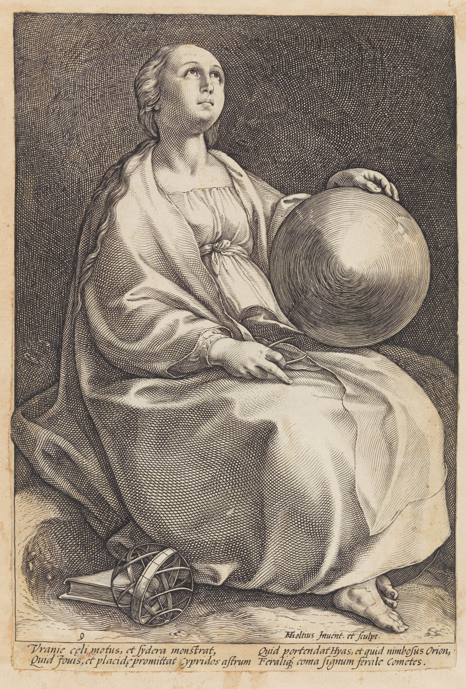

لا يوجد في المصادر التي راجعناها دليل على أميرة تاريخية باسم «أورانيا فان ناسو» وُلدت في شام سنة 1858. لا تُستخدم هذه العبارة بعد الآن كحقيقة في نقطة نور.
نقطة نور · البحث الحي 006
أورانيا × ناسو
السماء · الأدب · بريدا · الذاكرة
تحقيق في الالتباس بين «أورانيا» وبيت ناسو، مع فصل الشخصية الأسطورية/الأدبية عن أفراد السلالة التاريخيين.

01 · التصحيح المركزي
أورانيا هي ملهمة الفلك في التقليد الكلاسيكي، وتظهر كشخصية أدبية في قصيدة فوندل عن ولادة ويليم فان ناسو (Willem van Nassau) سنة 1626، حيث يصف الهامش ظهورها ثم يذكر أنها تتنبأ.
02 · ناسو وبريدا
تؤرخ الأسرة الملكية الهولندية بداية الصلة بين ناسو وهولندا بزواج إنجلبرت الأول من ناسو (Engelbrecht I van Nassau) من يوهانا فان بولانن (Johanna van Polanen)، سيدة بريدا، سنة 1403. كما تضم الكنيسة الكبرى (Grote Kerk) في بريدا قبور أسلاف الأسرة الملكية.
03 · ماذا تعني أورانيا هنا؟
قصيدة فوندل (Vondel) «جرس ميلاد ويليم فان ناسو (Geboortklock van Willem van Nassav)» صدرت سنة 1626، وويليم المذكور فيها ابن فريدريك هندريك (Frederik Hendrik) وأماليا (Amalia).
أورانيا تؤدي وظيفة نبوئية داخل القصيدة. هذا لا يجعلها شخصاً تاريخياً من عائلة ناسو.
بريدا عقدة تاريخية حقيقية لبيت ناسو، لذلك يرتبط البحث مباشرة ببحث شام–بريدا والكنيسة الكبرى (Grote Kerk).
التشابه بين أورانيا (Urania) وأورانيه (Oranje) ليس دليلاً على أصل لغوي مشترك، ولا على وجود «أميرة أورانيا».
04 · شجرة التقاطع الموثق
الشجرة التالية لا تدمج النسب بالرمز. الخط الأخضر تاريخ عائلي/مكاني موثق، والخط الذهبي أدبي. نقطة الالتقاء الوحيدة المعروضة هي موضع توجد له وثيقة فعلية.
خط ناسو التاريخي
1403 · موثقإنجلبرت الأول من ناسو (Engelbrecht I van Nassau) × يوهانا فان بولانن (Johanna van Polanen)
الزواج الذي جعل بريدا عقدة أساسية في دخول بيت ناسو إلى تاريخ الأراضي المنخفضة.
بريدا (Breda) · موثقناسّاو بريدا
تنامت ممتلكات الأسرة ومناصبها السياسية والعسكرية من قاعدة بريدا.
الكنيسة الكبرى (Grote Kerk) · موثقمصلى الأمراء (Prinsenkapel) ومدافن ناسو
الكنيسة تحفظ قبوراً ونصباً لأسلاف الأسرة الملكية، ومنها إنجلبرت الثاني (Engelbert II) وسيمبورغا (Cimburga)، كما دُفن رينيه دو شالون (René de Chalon) في مصلى الأمراء (Prinsenkapel).
1544 · موثقويليم فان ناسو (Willem van Nassau) → ويليم فان أورانيه (Willem van Oranje)
بعد وفاة رينيه دو شالون (René de Chalon) بلا أبناء انتقلت ممتلكاته إلى ابن عمه ويليم فان ناسو (Willem van Nassau)، الذي صار معروفاً بوليم فان أورانيه.
خط أورانيا الأدبي
تقليد كلاسيكيأورانيا (Urania)
ملهمة الفلك والسماء في التراث اليوناني؛ رمز معرفي لا فرداً من سلالة ناسو.
1626 · موثق نصياًفوندل (Vondel) · جرس ميلاد ويليم فان ناسو (Geboortklock van Willem van Nassav)
قصيدة عن ولادة ويليم، ابن فريدريك هندريك (Frederik Hendrik) وأماليا (Amalia)، وتظهر فيها أورانيا كشخصية أدبية.
داخل النصأورانيا تتنبأ
الشرح النقدي للنص يذكر دورها النبوئي داخل القصيدة. هذا دليل أدبي، وليس شهادة تاريخية عن أميرة حقيقية.
تصحيح نقطة نورلا «أميرة أورانيا من ناسو في شام 1858»
لم نجد سنداً أرشيفياً لهذه العبارة، لذلك حُذفت من طبقة الوقائع وبقيت فقط في سجل التصحيحات.
نقطة التقاطع الموثقة: اسم ويليم فان ناسو (Willem van Nassau) داخل قصيدة 1626 التي تستخدم أورانيا (Urania) كشخصية نبوئية. هذا تقاطع أدبي-تاريخي، وليس علاقة نسب.
أخضر = حقيقة تاريخيةذهبي = نص/أدب موثقأزرق = رمز/سياقأحمر = تصحيح أو نفي